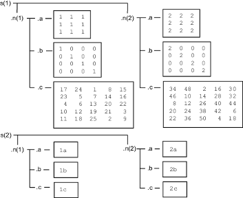

Access Data in Nested Structures
This example shows how to index into a structure that is nested within another structure. The general syntax for accessing data in a particular field is
structName(index).nestedStructName(index).fieldName(indices)
When a structure is scalar (1-by-1), you do not need to include
the indices to refer to the single element. For example, create a
scalar structure s, where field n is
a nested scalar structure with fields a, b,
and c:
s.n.a = ones(3); s.n.b = eye(4); s.n.c = magic(5);
Access the third row of field b:
third_row_b = s.n.b(3,:)
Variable third_row_b contains the third row
of eye(4).
third_row_b =
0 0 1 0Expand s so that both s and n are
nonscalar (1-by-2):
s(1).n(2).a = 2*ones(3); s(1).n(2).b = 2*eye(4); s(1).n(2).c = 2*magic(5); s(2).n(1).a = '1a'; s(2).n(2).a = '2a'; s(2).n(1).b = '1b'; s(2).n(2).b = '2b'; s(2).n(1).c = '1c'; s(2).n(2).c = '2c';
Structure s now contains the data shown:

Access part of the array in field b of the
second element in n within the first element of s:
part_two_eye = s(1).n(2).b(1:2,1:2)
This returns the 2-by-2 upper left corner of 2*eye(4):
part_two_eye =
2 0
0 2